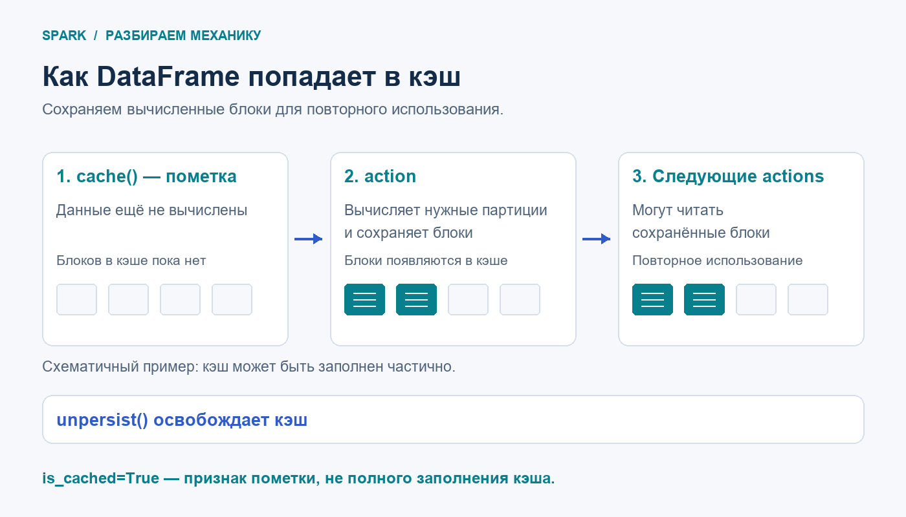

Если несколько действий используют один дорогой промежуточный результат, Spark может вычислять его повторно. Кэширование позволяет сохранить вычисленные блоки и использовать их в следующих действиях. Выигрыш зависит от запроса, объёма данных и доступных ресурсов.
cache() помечает DataFrame для сохранения. Сам вызов ещё не вычисляет строки. Когда action обращается к данным, Spark вычисляет нужные партиции и сохраняет их блоки. Следующее действие может прочитать эти блоки из кэша.

Пусть df содержит покупки с колонками c_id и amt. Посчитаем сумму по клиенту, затем узнаем число клиентов и покажем пять крупнейших сумм:
from pyspark.sql import functions as F
totals = (
df.groupBy("c_id")
.agg(F.sum("amt").alias("total_amt"))
.cache()
)
print(totals.is_cached) # True: кэширование включено
print(totals.count()) # action: вычисляет итог и заполняет кэш
totals.orderBy(F.desc("total_amt"), "c_id").show(5)
totals.unpersist() # результат больше не нужен — освобождаем кэшgroupBy() задаёт группировку, а agg() возвращает DataFrame, который мы кэшируем. Без кэша оба действия могут повторно вычислять общий промежуточный результат. Но правило «каждый action всегда пересчитывает весь DAG с нуля» слишком сильное: Spark выполняет нужную часть плана, оптимизирует её и в некоторых случаях повторно использует уже готовые результаты.
is_cached=True появляется до action. Например, show(5) не гарантирует вычисления всех партиций. В примере выше count() проходит весь кэшируемый результат; добавлять отдельный count() только ради прогрева нужно не всегда — это тоже работа.MEMORY_AND_DISK_DESER: блоки могут сохраняться в памяти и на диске. Подробности уровней хранения разберём дальше.unpersist() снимает пометку и удаляет сохранённые блоки; по умолчанию он не ждёт завершения удаления всех блоков.Когда пробовать: общий результат дорогой и нужен несколько раз. Сравните время и метрики с кэшем и без него. Для дешёвого или однократного вычисления затраты на кэш могут не окупиться; число «два использования» — повод проверить, а не гарантия ускорения.
В тренажёре Stepik мы отрабатываем вызовы API и состояние is_cached. Физическое хранение, скорость и Spark UI проверяются в настоящем Spark из практической части курса. Во вкладке Storage можно увидеть сохранённые партиции и их размер.
Подробнее: DataFrame.cache, DataFrame.unpersist, кэширование Spark SQL, сохранение и восстановление блоков.